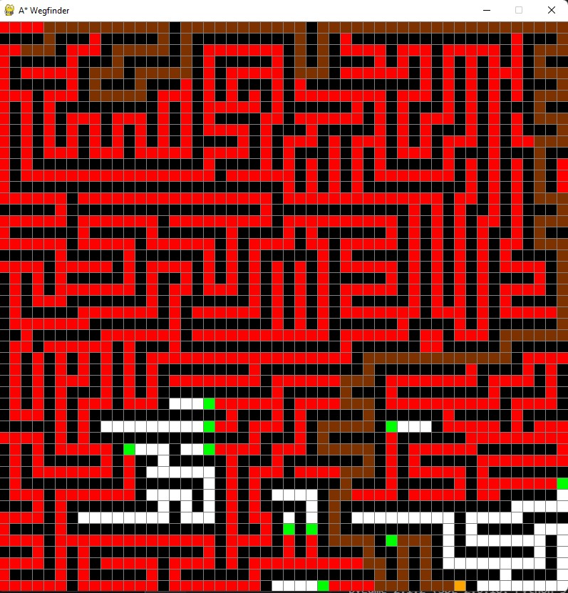

Hi, I am Dominik. I am a 21 year old business informatics studend from Stuttgart.
I am currentyl in my 5th semester at the university of applied science of Stuttgart.
A*-Algorithm
Finished algorithm
With this small project I wanted to implement the relatively well-known A*-algorithm and visualize
how it works. The A* algorithm tries to find the shortest path from a starting point to a
destination point. To make this a little more interactive a window with a grid is created. By
left-clicking you can first define a starting field (turquoise) and a target field (orange), by
further clicking on “free” fields these become a barrier, which makes it possible to draw your own
labyrinth. Alternatively, a pre-made labyrinth can be created with the key: “L”. By right-clicking
on occupied fields you can also reset them, so you can edit e. g. the generated labyrinth. Pressing
the space bar starts the algorithm and works towards the solution. It marks already “completed”
fields in red and open fields from which the target can still be found green. After reaching the
destination, the shortest path is marked brown and you can reset everything by pressing the “Z” key
and start drawing again. To further experiment with the behavior of the algorithm, you can copy the
currently drawn pattern/labyrinth with “C” and paste it again with “V” (the clipboard is
persistent). Demonstration video.
A*-Algorithm Demonstration
Predefined labyrinth:
Drawing individual barrier:
Solarsystem
Solarsystem
visualization
The simulation of the solar system is based on real numbers such as the masses and distances of the
luminaries. With the help of Newton’s law of gravity, the forces that occur between all
luminaries are calculated. If you break the forces, in the two-dimensional plane, in their x- and
y-components, you can then calculate, with the current velocity, the new position of the planets.
The
distances covered are then calculated correspondingly to the scale of the window and displayed
there. The size of the planets and the Sun is only shown schematically, since the relationship is
not meaningful here. Furthermore, the traveled distances of the individual planets are drawn as
circular orbits. Due to the different orbital velocities of the planets, different forces act on the
individual planets at different times, thus changing their orbits slightly. This is represented by
the distance to the Sun, which are located on the planet and are recalculated with each new point
visited. The background consists of randomly generated stars that change with each restart of the
program. The luminaries are represented by pictures of the planets and the Sun itself. Video demonstration.
Solarsystem Demonstration
Solarsystem simulation
Sorting algorithms
GUI overview
The idea of this project is to sort a list of numbers, which are represented by a column chart, step
by step and display the individual steps graphically. In addition, it should be possible to
change the sorting algorithm as well as the sorting order (ascending/descending) and the number of
columns by simple inputs. The individual columns are displayed in different shades of gray to make
them easier to distinguish. The current selection of the sorting algorithm and the sorting order is
displayed in green and changes with changing selection. Currently four sorting algorithms are
implemented (Bubblesort, Insertionsort, Selectionsort and Quicksort), where the different sorting
processes can be observed. Video demonstration.
Sorting Demonstration
Insertionsort visualization
Quicksort visualization
Genetic algorithm
Algorithm structure
Part of the operations research module was the development of a genetic algorithm (GA) over a
period of about 1 month. This GA should find the best possible solution for various lotsizing
problems. My task was to implement the algorithm logic, which was to minimize the costs incurred
through various selection and mutation procedures. The top screenshot shows the basic structure
of the algorithm. The bottom two screenshots show the roulette wheel selection and finally the
summary result of the first phase (consisting of a total of 96 lot size problems, as well as the
comparison of our own solutions with the historically best solutions).
Roulette wheel sselectionResults
Stock screener
GUI input
The idea was to filter the companies listed in the S&P500 on the basis of various criteria such as
the size of the company (market capitalization), the price to earnings ratio (P/E ratio) or the
operating profit margin to find a starting point for potentially “fair” or “undervalued” companies.
For this purpose the yahoo_fin package is used which is essentially an already implemented scraping
tool and thus allows to evaluate the necessary information such as the prices and balance sheets of
the companies. For more easy operation, you can set the filter parameters via a user interface,
implemented with Tkinter. The top screenshot shows an example selection of filtering criteria and
the second screenshot shows an extract of the filtered results. “From online” reloads all
information from yahoo_fin and saves it for each share in a CSV file. “From Data” reads the
information from these CSV files and is therefore also capable of running offline. The filtered
results are output in the console and additionally saved in a JSON file.
 Solarsystem
visualization
Solarsystem
visualization GUI overview
GUI overview Algorithm structure
Algorithm structure Roulette wheel sselection
Roulette wheel sselection